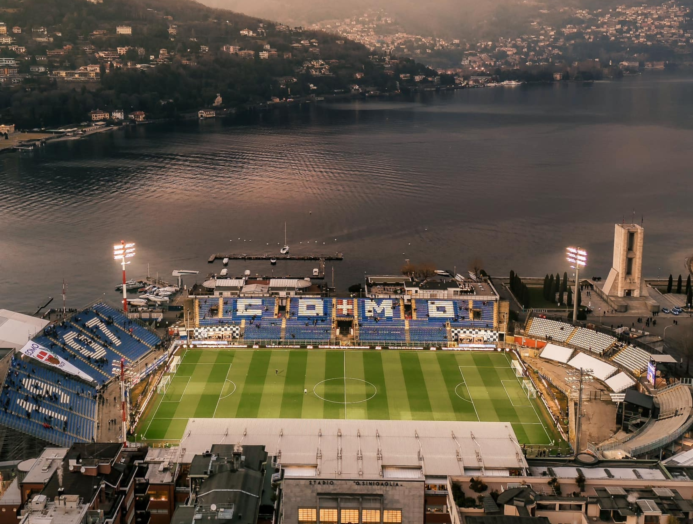
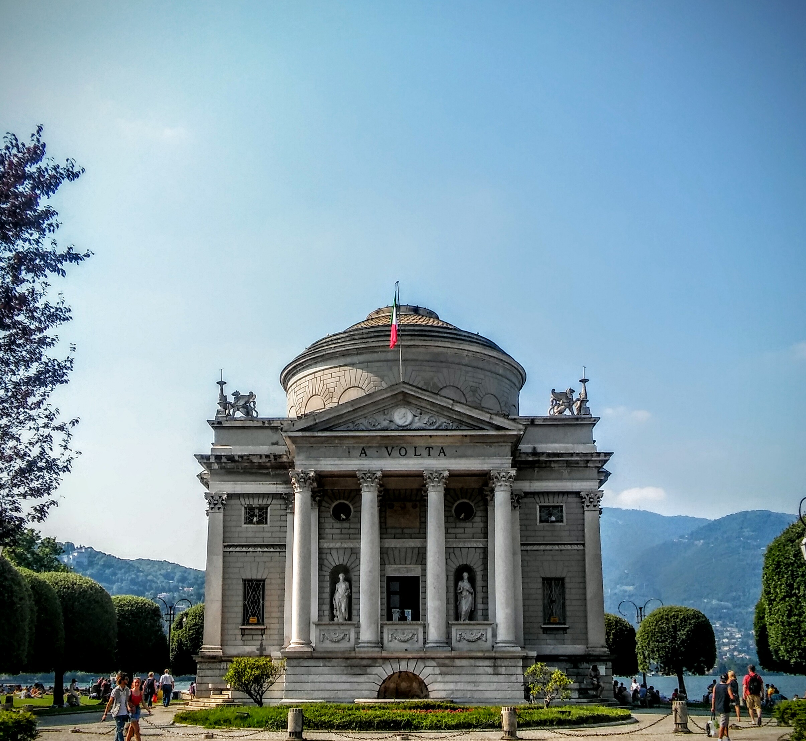
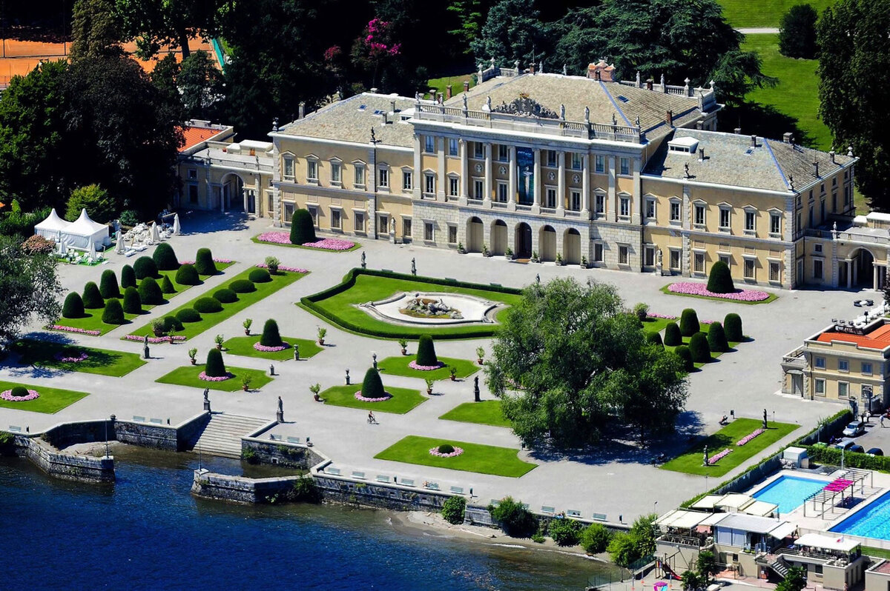

Estadio Giuseppe Sinigaglia

Estadio del equipo de fútbol Como 1907, con vistas únicas al lago. Leer más sobre el Estadio Giuseppe Sinigaglia.
Un destino que combina historia, naturaleza y cultura.
Como es una ciudad situada en el norte de Italia, en la región de Lombardía, a orillas del Lago de Como y cerca de la frontera con Suiza, al pie de los Alpes. Destaca por su entorno natural, sus villas históricas y su atractivo turístico.
El lago, de origen glaciar y con forma de “Y” invertida, es uno de los más profundos de Europa. La ciudad se encuentra a unos 45 km de Milán y a 201 metros sobre el nivel del mar.
Históricamente, Como fue una importante ciudad de la antigua Roma, fundada como Novum Comum. A lo largo de los siglos, ha pasado por distintas etapas de dominio, incluyendo el Imperio romano, el ducado de Milán, el dominio español y el austríaco, hasta integrarse en la Italia moderna en el siglo XIX.
Desde la Edad Media, ha sido un importante centro de producción de seda, actividad que aún forma parte de su identidad económica junto con el turismo.
Entre las figuras más destacadas de Como se encuentran los escritores romanos Plinio el Viejo y Plinio el Joven, así como el científico Alessandro Volta.
Leer más sobre la ciudad de Como
Tabla informativa con jugadores históricos del Como 1907, su país, fecha de nacimiento, partidos disputados y goles marcados.
| Jugador | Club Actual | País | Fecha de Nacimiento | Partidos | Goles |
|---|---|---|---|---|---|
| Giancarlo Centi | Retirado | Italia | 14.05.1959 | 384 | 3 |
| Bruno Ballarini | — | Italia | 18.04.1937 | 356 | 22 |
| Claudio Correnti | Retirado | Italia | 12.03.1941 | 313 | 6 |
| Luigi Paleari | — | Italia | 08.11.1941 | 294 | 2 |
| Silvano Fontolan | Retirado | Italia | 24.02.1955 | 284 | 10 |

Estadio del equipo de fútbol Como 1907, con vistas únicas al lago. Leer más sobre el Estadio Giuseppe Sinigaglia.

Uno de los lagos más bellos de Europa, rodeado de montañas y villas. Leer más sobre el Lago de Como.

Museo dedicado al inventor de la pila eléctrica. Leer más sobre el Tempio Voltiano.

Villa neoclásica rodeada de jardines junto al lago. Leer más sobre Villa Olmo.
Vídeo sin narración con música de fondo, que muestra un recorrido visual por Como, incluyendo sus monumentos, el lago y el entorno natural de la ciudad.
Himno nacional de Italia, conocido como “Il Canto degli Italiani”, con letra de Goffredo Mameli.